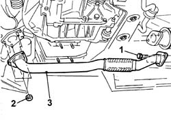

1076B50 exhaust pipe attachment to engine - r + r
- Path
- Procedures > 10 ENGINE > 1076 EXHAUST PIPES AND SILENCERS > 1076B exhaust pipes and silencers > 1076B50 exhaust pipe attachment to engine - r + r
- Kind
- repair procedure (removal / refitting; the operation number is the code)
- Applies to
- engines: 1.9 JTD 8V; all production periods
- Interactive page
- https://sloeber94.github.io/elrnDB-a147/en/#/3025061
Applies to: engines: 1.9 JTD 8V; all production periods
 Removing
Removing
 Refitting
RefittingPlace the car on a ramp.
7055B54 under-engine guard - r r
1. Undo the bolts securing the pipe to the catalytic converter.
2. Undo the nuts securing the exhaust pipe to the manifold.
3. Remove the front exhaust pipe section.
Recover the exhaust pipe gaskets

Applies to: engines: 1.9 JTD 8V; all production periods
Refitting
RemovingFit the exhaust pipe gasket.
Fit the front section of the exhaust pipe.
Tighten the bolts securing the exhaust pipe to the catalytic converter.
 | Fastening | Component | Ø | Value (daNm) |
|---|---|---|---|---|
- | Bolt | EXHAUST PIPE TO ENGINE | M8 | (catalytic converter) 3 |
Tighten the nuts securing the exhaust pipe to the manifold.
| Fastening | Component | Ø | Value (daNm) |
|---|---|---|---|---|
- | Nut | EXHAUST PIPE TO ENGINE | M8 | (catalytic converter) 3 |
7055B54 under-engine guard - r r
Remove the vehicle from the ramp.
Topics linked from this page (1)
Topics that link to this page (15)
- 1004B10 power unit with manual gearbox - r + r
- 1020A20 crank case oil sump - r + r clean seals for sealant application
- 1020D14 front crank shaft oil seal cover - r + r and replace seals for versions with oil pump on crank shaft, timing side
- 1020D26 flywheel side oil seal cover - r+r
- 1024B10 engine flywheel - r + r for versions with manual gearbox
- 1028H20 piston with connecting rod - r r
- 1084B26 emgine oil intake duct - r r
- 1810A20 clutch - r + r
- 2110A10 manual gearbox and differential - r + r
- 2710A35 intermediate drive shaft mount - r r
- 3340B56 RIGID PIPE from hydraulic CONTROL UNIT to RIGHT FRONT BRAKE - R.R.
- 4130A10 power steering box - r+r - check tow-in if necessary separately - includes bleeding
- 4410c10 front suspension stabilizer bar - r+r - check wheel geometry separately
- 4410D13 front suspension beam - r r
- 4410D15 front suspension beam complete with wishbones and stabiliser bar r r